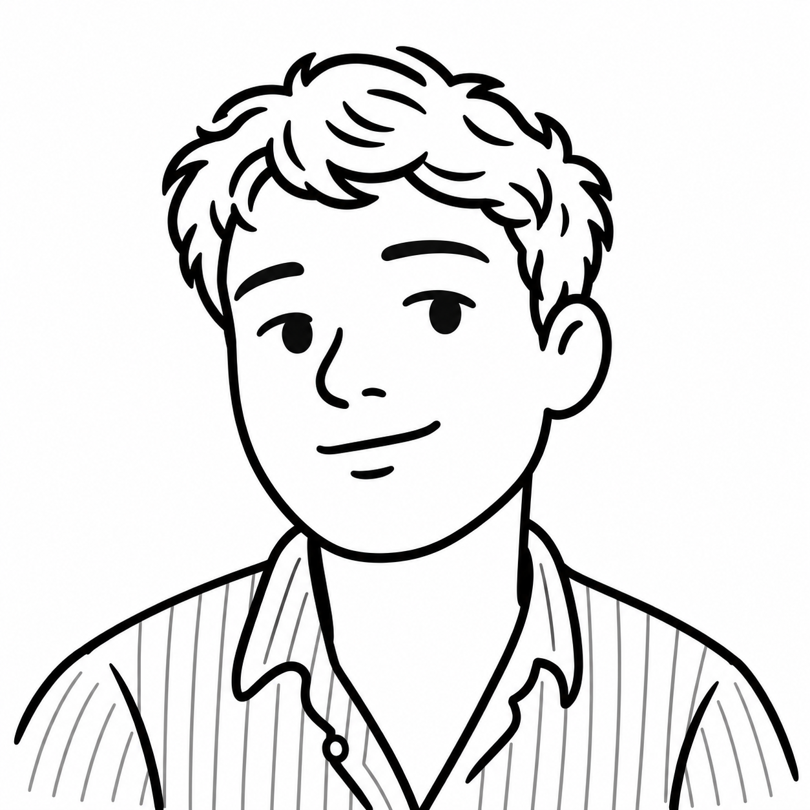

James Swallow
Geography Educator
Based in Bristol, South West England
I teach Geography and aim to create engaging, inclusive learning that helps young people understand the world, both inside and beyond the classroom.

Areas of interest
- Climate change pedagogy
- Learning outside the classroom
- Inclusion
- Wellbeing
- Digital tools